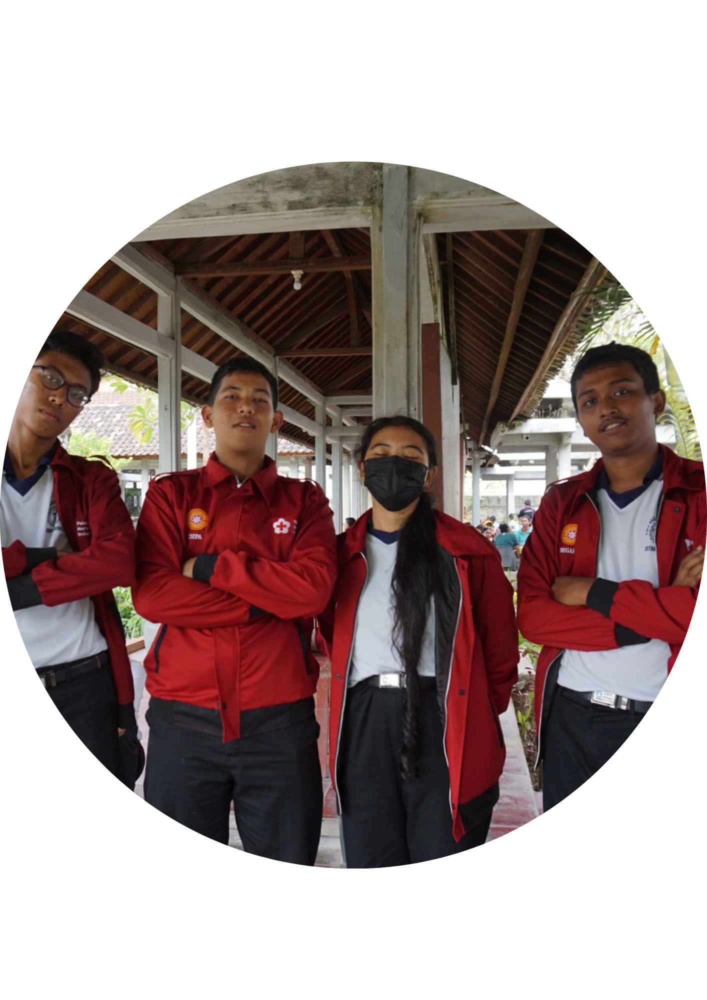

 |
Di SMKN 1 Denpasar saya mengambil ekstrakulikuler PMR dan KSPAN yang sebenarnya masih memiliki
ikatan dalam materi yang diajarkan di dalam ekstra tersebut
Dalam kedua ekstra tersebut
saya sendiri mendapat banyak pengalaman dan teman teman baru.
Di PMR selain mendapat teman
yang terpenting yang saya dapatkan adalah pengalaman dari cara melakukan penanganan saat ada
korban pendarahan sampai penanganan patah tulang,
Selain pengalaman itu saya juga mendapat
pengalaman dari berorganisasi walau tidak sebergengsi OSIS dan Sehebat Dewan Ambalan. tapi
setidaknya
PMR itu keren, PMR itu sendiri adalah relawan atau bisa dibilang garda terdepan jika
terjadi bencana alam dari daerah
perkotaan sampai ke pelosok cuman relawan itu bukan dari PMR
dan PMI ajaloh relawan itu
bisa dari masyarakat, DAMKAR, bahkan sampai Pemerintah itu sendiri
Mungkin Kalian Juga Seorang Relawan. dan cara menjadi relawan itu ada banyak
namun yang
terpenting itu adalah niat dan kesadaran diri masing masing akan pentingnya sesama dan tidak
hanya mempedulikan diri masing masing terutama pasca COVID-19 ini,
banyak masyarakat terdampak
dari pemutusan hak kerja, penuruan pendapatan, meninggal dunia, kehilangan orang terkasih dll
jadi ayo temukan jiwa relawanmu mulai dari sekarang.
|